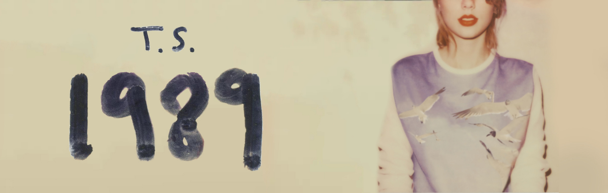
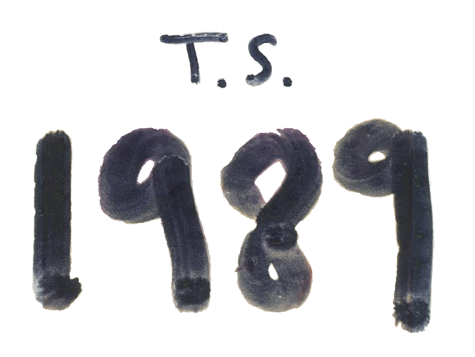

在创作专辑之前，泰勒·斯威夫特满脑子想的，都是需要一些新的音乐风格，她定下这个目标之后便计划开始在第二天着手，并决定不听从唱片
公司里任何人的参与建议。在制作人数上，泰勒·斯威夫特打算将10个合作人减少到只有4到5个人的小团队，而这些都是她本人一直想要合作、或是
喜欢共事的人。最后，她和马克斯·马丁负责音乐总监，并立志要做一张曲风统一的专辑。在录音室工作时，希尔贝克、瑞安·泰德等人主要负责贝斯、
原音吉他、电吉他、钢琴等乐器的伴奏。
在专辑音乐的创作上，泰勒·斯威夫特听了许多1980年代后期的流行音乐，以及安妮·蓝妮克丝、菲尔·柯林斯、麦当娜·西科尼的曲风，并从这些
艺人的音乐作品上受到启发，开始钻研并制作。而她之所以会改变之前的音乐曲风，则是她认为人即要听从自己的内心，又要永于挑战从未涉足的领域
；她可以重复演唱《Red》这样风格的歌曲，但这样的重复令她索然无趣，于是决定尝试一下流行音乐。在专辑的命名方面，泰勒·斯威夫特创作专辑期
间，选用的都是1980年代的合成流行乐，同时又参考了自己的出生日期“1989年12月13日”，所以就决定将这张专辑取名为《1989》。
1. Welcome To New York
2. Blank Space
3. Style
4. Out Of The Woods
5. All You Had To Do Was Stay
6. Shake It Off
7. I Wish You Would
8. Bad Blood
9. Wildest Dreams
10. How You Get The Girl
11. This Love
12. I Know Places
13. Clean
14. Wonderland
15. You Are In Love
16. New Romantics
如果说《Red》中“乡村”与“流行”的分庭抗礼，标志着泰勒·斯威夫特向“流行音乐界”的正式进军，那么《1989》则意味着她对“乡村音乐”的
彻底转型，虽然出道后的泰勒·斯威夫特一直被人诟病不够“村”，但她走的却是“稳扎稳打”的路子。从乡村乐味最浓的《泰勒·斯威夫特》，到“乡村
流行乐化”的《Fearless》《Speak Now》，再到试水加入电音元素的《Red》，泰勒·斯威夫特可谓是步步为营。每个农村出身的人，或多或少都曾
有过，对城市生活无可救药的迷恋。泰勒·斯威夫特作为乡乐歌手转型成为流行乐歌手之后，在《Welcome to New York》这首描述城市灯火的歌中
，所透露出的“咄咄逼人”。另一方面，如果说《Red》是她和“流行乐”签订的双边合作协议，那么《1989》就是一篇完整的婚姻誓词。
《1989》是一张在展示泰勒·斯威夫特本真个性之余、在不得罪大多数流行音乐爱好者的前提下、体现流行乐制作水准的创作型歌手唱片。整张
专辑的后半段，除去“反目成仇”式的单曲《Bad Blood》在题材上的不讨好以外，其中也不乏精彩的作品。此外，泰勒·斯威夫特还善于将其他艺人的
音乐特色融入到自己的作品里：《I Know Places》其主歌段落中奇怪的钢琴循环就是她之前作品中从未出现过的，《I Wish You Would》则可以轻
易放入Haim的专辑中毫不违和；而《Wildest Dreams》中的桥段处，类似于拉娜·德雷的葬曲风和FKA Twigs的性感空寂。不仅如此，《Bad Blood》
和《Clean》《Style》都给人留下了深刻、多元化的印象；然而可惜的是，泰勒·斯威夫特的声音在歌曲《Style》中，并没有相匹配地变得更加成熟。
| 获奖记录 | |||||||||||
|---|---|---|---|---|---|---|---|---|---|---|---|
| 时间 | 颁奖机构 | 授予奖项 | 获奖作品 | 结果 | |||||||
| 2015 | 第29届日本金唱片奖 | 年度西洋专辑 | 《1989》 | 获奖 | |||||||
| 第23届公告牌音乐奖 | 最佳二百强专辑 | 《1989》 | 获奖 | ||||||||
| 第43届全美音乐奖 | 最佳流行摇滚专辑 | 《1989》 | 获奖 | ||||||||
| 2016 | 美国第58届格莱美奖 | 年度专辑 | 《1989》 | 获奖 | |||||||
| 最佳流行专辑 | 《1989》 | 获奖 | |||||||||
| iHeartRadio音乐奖 | 年度专辑 | 《1989》 | 获奖 | ||||||||
